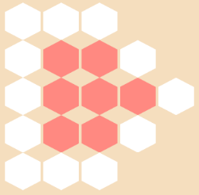
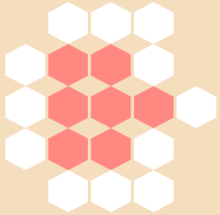
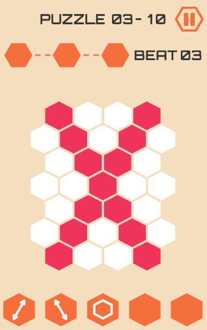

前言
原本打算写如何把json转换为plist文件，但是后来发现有些问题，所以暂时先不写了，等以后有时间补上。这一篇写写最主要的部分：关卡的布局。
关卡地图
第一篇里简单的说明了下地图文件levelmap.json里的数据，每一关都有一个多个六边形的组成的地图（暂且称之为地图吧），奇数行包含7个数字，偶数行包含6个数字，之所以这么安排是为了使整个地图可以居中对齐。
以第一个主题（即大关卡，暂且称之为主题）第1个关卡地图为例，其地图数据如下：1
2
3
4
5
6
7
8
9
10
11
12"color":0, "id":1
...
[0,1,1,1,0,0,0],
[1,2,2,1,0,0],
[1,2,2,2,1,0,0],
[1,2,2,1,0,0],
[0,1,1,1,0,0,0],
[0,0,0,0,0,0],
[0,0,0,0,0,0,0],
[0,0,0,0,0,0],
[0,0,0,0,0,0,0]
...
其中0表示该位置无六边形，1表示白色六边形，2表示主题色六边形，主题色序号即关卡属性中的color字段。先试着把整个地图画出来（忽略每行两个六边形之间的间距）：

发现问题了没，嗯，没有六边形的位置实际上也是需要空出来的，再试着重新画一次：

这回好像和目标地图有那么点像了，但是还是不太对，试着把每行居中调整一下：
这回和目标地图有八分相似了，然而还是有些问题，两行之间的间距太大，需要再稍微调整一下。嗯，这些是细节问题，可以后续在写代码时去控制。说到这，地图细节这一块就差不多了，好像很简单吧，然而我在写的时候调试了好久，才总算弄出来了= =
数字和箭头
数字
从第四个主题第1关开始，之后的部分关卡就有了数字，分为以下两种情况：
1、单个位置数值<10：该六边形颜色为主题色，数字为白色，数字值为该位置数值-2。例如：某个位置数值为5，那么这个位置是一个主题色的六边形，包含了一个白色的数字3。
2、单个位置数值>20：该六边形颜色为白色，数字为主题色，数字值为该位置数值最后一位-1。例如：某个位置数值为22，那么这个位置是一个白色的六边形，包含了一个主题色的数字1。
以第四个主题第6关为例，该地图包含6个有数字的六边形，六边形都是白色，数字都是主题色。其地图数据如下：1
2
3
4
5
6
7
8
9
10
11
12"color":3, "id":6
...
[0,22,1,22,0,0,0],
[2,1,1,2,0,0],
[22,1,2,1,22,0,0],
[1,1,1,1,0,0],
[0,22,2,22,0,0,0],
[0,0,0,0,0,0],
[0,0,0,0,0,0,0],
[0,0,0,0,0,0],
[0,0,0,0,0,0,0]
...
第四个主题第6关关卡截图：
箭头
从第三个主题第5关开始，之后的部分关卡就有了箭头，箭头对应的是mapitem数组中的配置，每个箭头数据配置如下形式：1
"y_x_arrow"
是的，没有看错，这里x和y的位置索引是反过来的。后面的arrow数值表示箭头的序号，第一篇中已经说明了。以第三个主题第5关为例，关卡包含的箭头配置如下：1
2
3
4"color":2, "id":5
...
"mapitem":["0_1_3","3_1_2","2_2_4","2_4_1"]
...
来看看第三个主题第5关的关卡截图：
第三个主题第5关的地图数据：1
2
3
4
5
6
7
8
9
10
11
12"color":2, "id":5
...
[0,2,1,2,0,0,0],
[2,1,1,2,0,0],
[2,1,2,1,2,0,0],
[1,1,1,1,0,0],
[0,2,2,2,0,0,0],
[0,0,0,0,0,0],
[0,0,0,0,0,0,0],
[0,0,0,0,0,0],
[0,0,0,0,0,0,0]
...
和第一个主题第1关地图类似，只是有些位置颜色发生了变化。先来看看左边的箭头，左边的箭头对应的是mapitem里的第一个字符串，也就是”0_1_3”：1也就是第1行（从0开始），0也就是第0列，也就是说箭头是在第2行第一个数字对应的六边形位置，它的颜色正好是主题色……后面的我想应该都可以看出来了。
可用箭头
从第三个主题第9关开始，之后的部分关卡就有了可用箭头，可用箭头在下方5个六边形中，配置对应关卡配置中的useritem数组。以第三个主题第10关为例，该关卡中有3个可用箭头：1
2
3
4"color":2, "id":10
...
"useritem":[3,2,4]
...
数字3、2、4表示箭头序号，分别对应 、
、 和
和 三个箭头。再来看看关卡截图：
三个箭头。再来看看关卡截图：

结束
关卡布局这一块先说到这，下一篇说说在cocos2d-x中读取json文件的那些事。